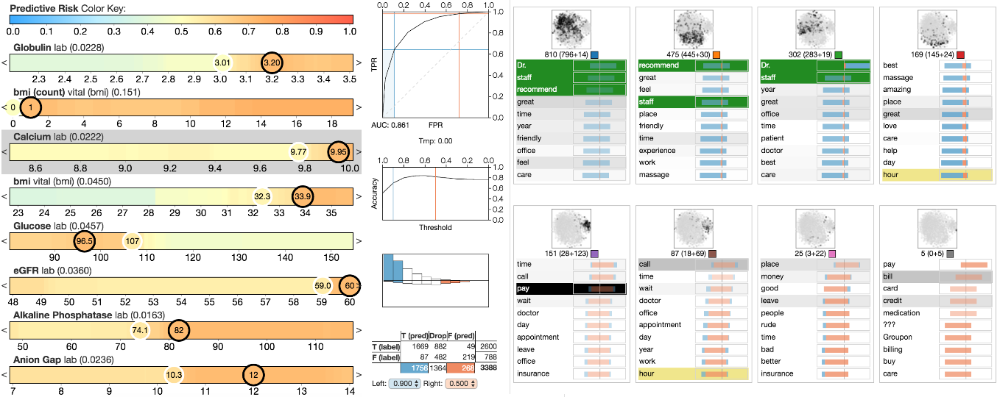

It is commonly believed that increasing the interpretability of a machine learning model may decrease its predictive power. However, inspecting input-output relationships of those models using visual analytics, while treating them as black-box, can help to understand the reasoning behind outcomes without sacrificing predictive quality. We identify a space of possible solutions and provide two examples of where such techniques have been successfully used in practice.